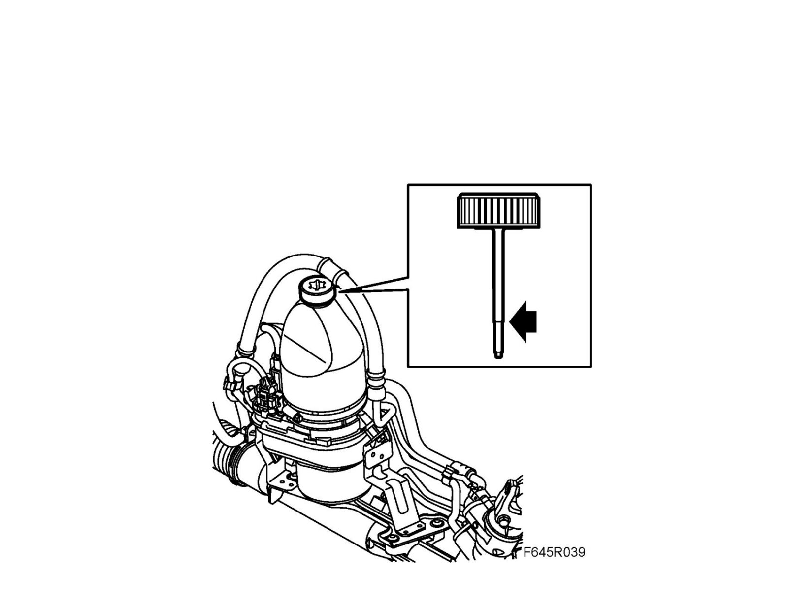

EHPS Hydraulic System, Filling and Bleeding
EHPS hydraulic system, filling and bleedingImportant
The EHPS system must not be run dry. Do not reuse drained fluid. Fill the hydraulic system with special fluid.
The electro-hydraulic power steering system is bled automatically when the engine is running. Due to the after flow in the hydraulic system the level in the electro-hydraulic power steering unit reservoir will fall. After the following procedure has been performed a small quantity of air may still remain in the system. This is not negative as EHPS is bled further during driving.
1. Remove the screw cap from the filler neck on the reservoir.
2. Top up with 93 160 548 Power steering fluid until it reaches the "MAX" mark (arrow) on the dipstick. Use
Use

3. Bleed the power steering unit
Start the engine 3x and switch off again after approx. 5 seconds hold a short pause before each starting
4. Bleed the hydraulic system
Start the engine
Turn the steering wheel 5x from end position to end position
Switch off the engine
5. If necessary: Fill with 93 160 548 Power steering fluid to the "MAX" mark
Use
6. Fit the screw cap